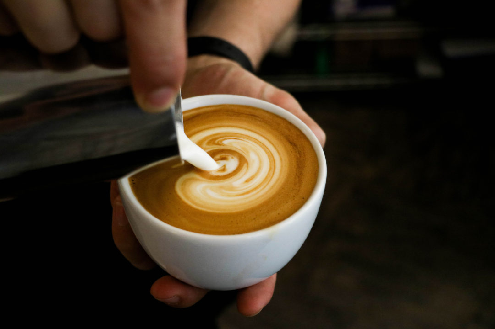

Kishi says the flat white originated in either Australia or New Zealand (the flat white’s origin story generates fierce debate). “People there call milk drinks white coffee and non-milk drinks black coffee. So flat white means milk coffee with a tiny bit of foam on top. Like, not as foamy as a cappuccino,” explains Kishi, noting how a cappuccino is usually one-third espresso, one-third steamed milk and one-third foam.
A latte is espresso and steamed milk, with a little bit of foam on top. “A flat white has a little bit less foam, but it’s like a latte,” says Kishi. Flat white devotees sometimes go a little bit further when differentiating it from a latte. Some say the magic of the flat white lies in how the milk is steamed and poured (it should be free-poured, which leaves rich micro foam throughout the beverage).This makes it seem sweeter — and less milky tasting — than a latte (it has caramel notes) with a luxurious mouthfeel. The espresso also comes through more in a flat white.



{kind=link}
{kind=link}